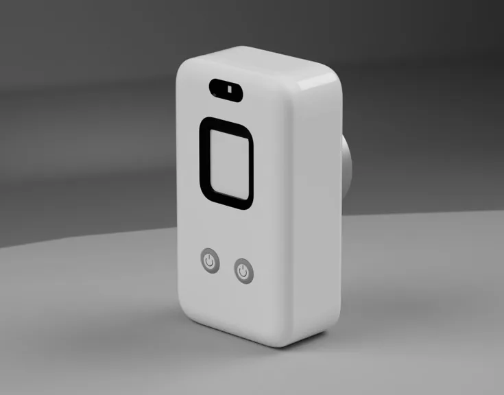
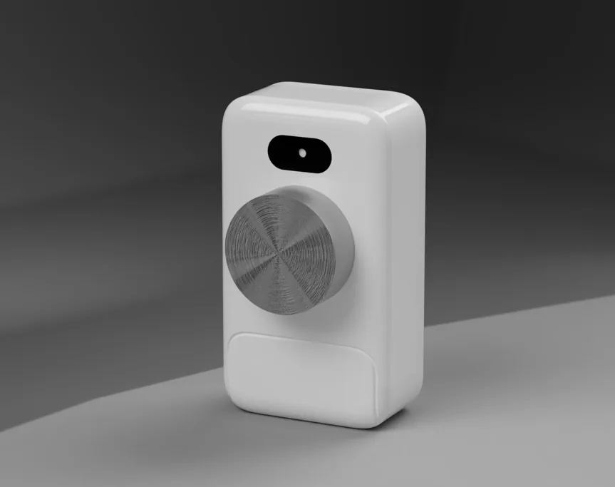
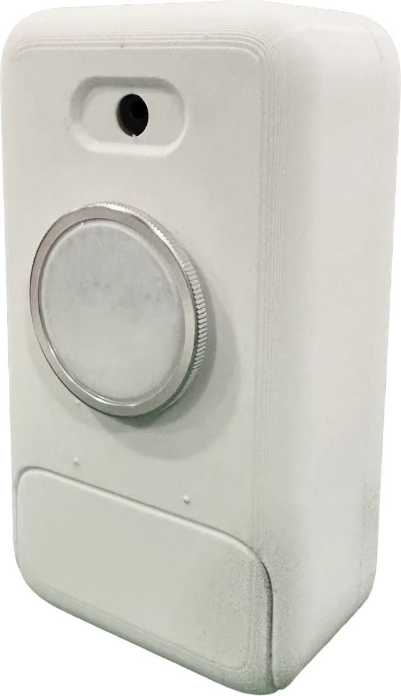

Kundol “Canoe” Tangruthaiwanich
Ruamrudee International School, Grade 12
Founder and Lead Engineer
TeleSync began with a simple observation: in a video consultation, a doctor can see and hear the patient, but cannot examine them. We are building the missing bridge, so that distance no longer decides the quality of a check-up.
Healthcare professionals in telemedicine often rely mainly on video calls and patient-reported symptoms, without enough objective examination data. Our mission is to bridge that care gap by extending real examination capability to rural, underserved, elderly and homebound populations, using a portable device and the smartphone people already own.


Five goals guide every decision in the device, the app and the dashboard.
Enable accurate digital recording of heart and lung sounds through guided placement and signal-quality assurance.
Collect key vital signs, including heart rate, SpO₂, temperature and blood pressure, within one standardised workflow.
Provide a simple guided application that helps non-expert caregivers and community health workers examine accurately.
Support offline-first capture, encrypted storage and secure synchronisation whenever connectivity is available.
Deliver structured, reviewable examination data that supports diagnosis, follow-up, triage and escalation.

Three of us, three paths to the same idea. In our own words, here is what inspired each of us to create TeleSync.
Ruamrudee International School, Grade 12
Founder and Lead Engineer
Bangkok Christian College, Grade 12
Research and Development Specialist
Ruamrudee International School, Grade 11
Chief Commercial Officer
My antibiotics research in aquaculture helped me see how biological research connects to the health and livelihoods of communities. Developing an LLM-integrated RAG ChatBot then showed me the value of translating scientific knowledge into practical tools that people can use. As my interests in biology became increasingly focused on medicine and human health, I wanted to bring that same approach to healthcare. This inspired me to aid in the development of Telesync, providing a way to connect patients and healthcare professionals through accessible technology; thus, allowing me to extend my motivation to support communities from aquaculture to human care.
TeleSync draws on published work in tele-auscultation, cuffless blood pressure measurement, optical vital-sign sensing and health-workforce access.